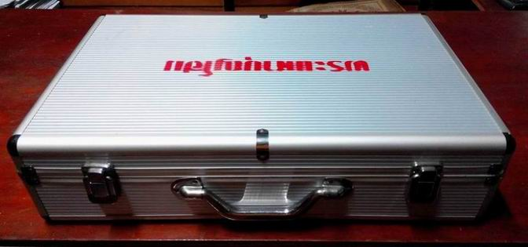
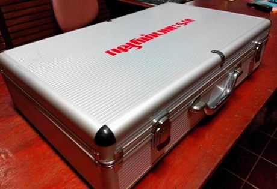
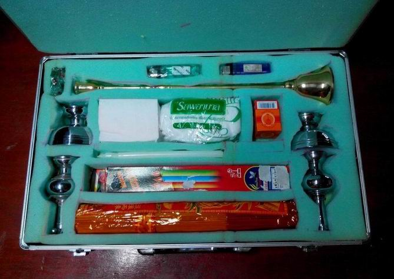
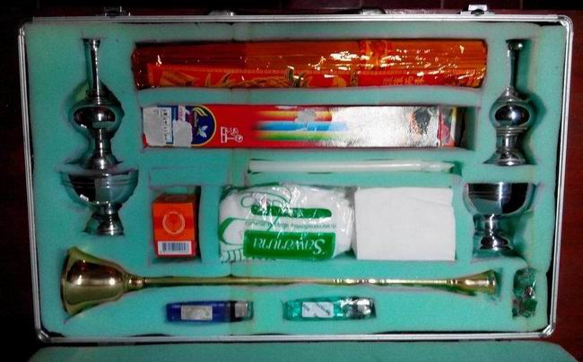
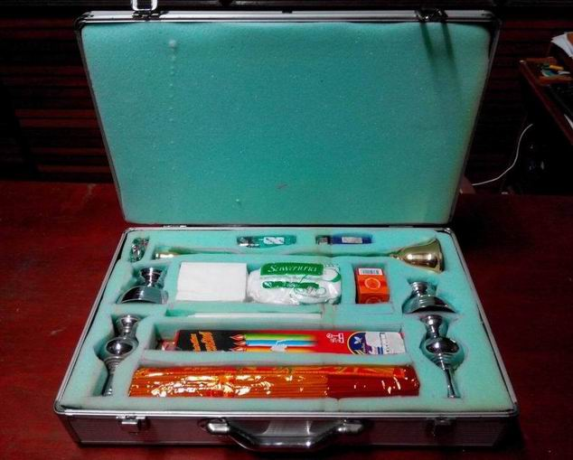
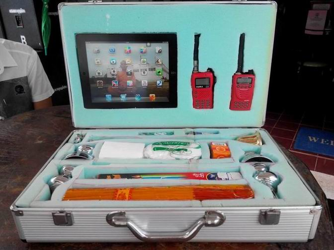

|
จากประสบการณ์เกี่ยวกับการเตรียมการและประกอบศาสนพิธีในงานทำบุญกุศล
ทั้งมงคลและอวมงคล ทั้งงานบุญ งานบวช งานแต่ง และ อีกหลายงานที่เป็นงานพิธี
ซึ่งวัด ศาสนพิธีกร รวมทั้งเจ้าภาพ มักจะพลาดเสมอ บางคราวก็ถึงกับวิ่งหากันวุ่นวายไปหมด
เมื่อถึงเวลาจะต้องใช้ เช่น เมื่อจะกรวดน้ำก็ต้องหาที่กรวดน้ำกันวุ่น
ฯลฯ ดังนั้น พระมหาบุญโฮม ปริปุณฺณสีโล(ไชยฤทธิ์) จึงได้ออกแบบ
"กระเป๋าศาสนพิธีกร หรือ Religious Materials Box" ขึ้นมา
เพื่อเป็นการเตรียมความพร้อมไว้ใช้ในการประกอบงานศาสนพิธีในงานบุญในวัดท่าไทรและพิธีต่าง
ๆ และเพื่อเป็นแนวคิดและตัวอย่างแก่วัดและศาสนพิธีกรท่านอื่นได้นำไปประยุกต์ใช้ต่อไป
ทีแรกคิดจะซื้อกระดานอัดขนาดหนา ๑๐ มิลลิเมตรมาเป็นวัสดุ แต่เกรงว่าฝีมือตัวเองจะไม่ถึงขั้น
ไม่สวยงาม และไม่สะดวก จึงได้จัดซื้อกระเป๋าสำเร็จรูปมาใช้ (ซึ่งมีขายตามร้านขายกระเป๋าโดยทั่วไป
ในภาพ ซื้อจาก ร้านอมร บนชั้น ๒ ห้างบิ๊กซี สุราษฎร์ธานี) ลองมาดูข้อมูลและราคาโดยประมาณ
บางท่านอาจจะซื้อได้ราคาสูงหรือต่ำกว่านี้ก็ได้นะครับ
กระเป๋าสำเร็จรูป ขนาดกว้างXยาวXลึก=30X50X12 ซ.ม.
ราคาใบล่ะ ๑,๐๐๐ บาท + ฟองน้ำ ราคา ๑๐๐ บาท (สำหรับบุและเจาะช่อง/หลุม
จำนวนตามที่เราต้องการ สำหรับใส่อุปกรณ์ต่าง ๆ) โดยภายในกระเป๋าบรรจุสิ่งที่จำเป็นสำหรับศาสนพิธีกรในการใช้ในการประกอบพิธี
จำนวน ๙ รายการ ดังต่อไปนี้
๑.เชิงเทียนชะนวน
ขนาดยาว ๔๐ ซ.ม. ๑ อัน ราคา ๓๕๐ บาท,
๒.ที่กรวดน้ำ
จำนวน ๒ ชุด ๆ ละ ๓๕๐ บาท รวมเป็นเงิน ๗๐๐ บาท,
๓.ไฟแช็คแก๊ส
จำนวน ๒ ชิ้น ๆ ละ ๕ บาท รวมเป็นเงิน ๑๐ บาท,
๔.ธูป
จำนวน ๑ ห่อ ราคาห่อละ ๔๕ บาท (ใช้ได้หลายงาน)
๕.เทียน
จำนวน ๒ กล่อง ๆ ๒ เล่ม และเทียนชะนวนอีก ๒ เล่ม รวมเป็นเงิน ๕๐
บาท
๖.เชื้อเพลิงสำหรับทาที่เทียนและธูปเพื่อให้จุดติดง่าย
เช่น เทียนผสมน้ำมัน ยาหม่องขวดใหญ่ ๑ ขวด ราคา ๓๔ บาท
๗.สำลีเพื่อชุบกับเชื้อเพลิงแล้วพันกับธูป
เทียน เพื่อให้จุดติดง่าย เป็นเงิน ๕ บาท
๘.กระดาษทิชชู่
สำหรับเช็ดทำความสะอาดอุปกรณ์และเช็ดมือ ๑ ห่อ เป็นเงิน ๕ บาท
๙.เทียนน้ำมัน
สำหรับยึดเทียนกับเชิงเทียน ๒ ถุง ๆ ละ ๕ บาท เป็นเงิน ๑๐ บาท
สรุปแล้วรวมทั้งกระเป๋าและอุปกรณ์ต่าง ๆ ที่บรรจุไว้พร้อมใช้งานในกระเป๋าศาสนพิธีกร
สิ้นงบประมาณเพื่อการนี้เป็นเงิน ๒,๓๐๙ บาท + ค่าติดต่อประสานงาน
๓๐๐ บาท รวมทั้งสิ้น ๒,๖๐๙ บาท (เลขสวย และลงตัวโดยมิได้นัดหมายครับท่าน)
|

|
|

|
|
กระเป๋าสำเร็จรูป ขนาดกว้างXยาวXลึก=30X50X12 ซ.ม. ราคาใบล่ะ
๑,๐๐๐ .บ
|
|
กระเป๋า
ขนาดกระทัดรัด สวยงาม ที่จับเหมาะมือและทนทาน
|
|

|
|

|
|
เจาะฟองน้ำตามที่ออกแแบไว้
ให้เหมาะสำหรับใส่อุปกรณ์ และครบตามที่ออกแบบ
|
|
อีกภาพหนึ่ง
เห็นความชัดเจน และใส่สิ่งของได้ครบตามที่ออกแบบไว้
|
|

|
|

|
|
|
|
|
|
ออกแบบที่
๑ ประหยัดงบฯ สะดวกสำหรับพิธีกรทั่วไป
|
|
ออกแบบที่
๒ เพิ่มงบประมาณขึ้น เหมาะกับพิธีกรซึ่งมีผู้ช่วยศาสนพิธีกร
|
ออกแบบที่
๒ เพิ่มงบประมาณขึ้น เหมาะกับพิธีกรซึ่งมีผู้ช่วยศาสนพิธีกร
ปรับปรุงให้เหมาะกับงานใหญ่ (แบบที่ ๒) เพื่อให้เกิดความสะดวกแก่การใช้งานมากยิ่งขึ้น
จึงได้ใส่อุปกรณ์เพิ่มเข้ามา ๒ รายการ ได้แก่
๑.ไอแพด ๑ เครื่อง
รุ่นล่าสุด ราคา ๒X,XXX บาท (ขนาดย่อมลงมาหน่อยก็ ๑X,XXX บาท ในภาพ
รุ่นท็อป ครับ) สำหรับเก็บ/ค้นหาข้อมูลต่าง ๆ เช่น คำอาราธานา
คำถวาย คำแนะนำ รูปภาพการจัดโต๊ะหมู่บูชาชนิดและแบบต่าง ๆ ภาพตัวอย่างการจัดสถานที่งานพิธี
แผนผังพิธี ฯลฯ
๒.วิทยุสื่อสาร
พร้อมใบอนุญาต ๒ เครื่อง ๆ ละ ๓,๑๐๐ บาท รวม ๖,๒๐๐ บาท เพื่อประสานงานระหว่างศาสนพิธีกร
และผู้ช่วยศาสนพิธีกร ในงาน
จึงนำรูปและข้อมูลมาให้ทุกท่านได้ชม เพื่อการจุดชะนวนความคิด
และป็นตัวอย่างแก่วัดและศาสนพิธีกรท่านอื่นได้นำไปประยุกต์ใช้ต่อไป
โดยไม่สงวนลิขสิทธิ์และสิทธิทางปัญญาแต่อย่างใด (ที่พ่นชื่อเอาไว้
เพียงเพื่อให้ผู้หยิบกระเป๋าไปใช้ ได้ส่งคืนที่เดิมถูก และเป็นกรณีตัวอย่าง
เท่านั้น) ครับท่าน
พระมหาบุญโฮม
ปริปุณฺณสีโล (ไชยฤทธิ์)
ป.ธ.๕,น.ธ.เอก,ศษ.บ., MPA (นิด้า)
ผู้ช่วยเจ้าอาวาสวัดท่าไทร

กลับไปหน้า
Web วัดท่าไทร
ไป Web สำนักงานเจ้าคณะภาค
๑๖
ไป Web ศูนย์พัฒนาคุณธรรมภาคใต้
ไป
Web วิทยุชุมชนตำบลท่าทองใหม่
ไป Web ชมรมวีอาร์ร้อยเกาะสุราษฎร์ธานี
|